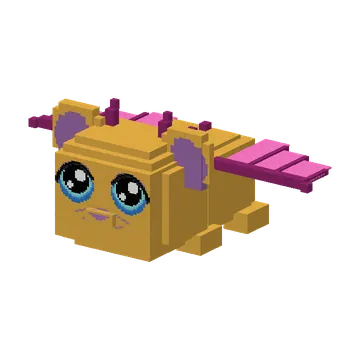
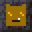
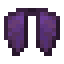

Opper-Mika has stolen every kaasknabbel. Make twelve Eyes of Vadsig, find the Knabbelkelder, open the portal and beat him in the Guheinde.
Opper-Mika heeft alle kaasknabbels gestolen. Maak twaalf Ogen van Vadsig, vind de Knabbelkelder, open het portaal en versla hem in het Guheinde.
Het Guheinde is the endgame of Guhs: a guh parody of the End and the Ender Dragon. Opper-Mika, the boss of all Mikas, has stolen every kaasknabbel of the guh kingdom, and without knabbels no guh is ever vahoeg. The Koningguh on his throne in the guh castle tells you the story (right-click him while he is wild) and gives you the book about it. Nothing is locked: you can do every step whenever you like.
Het Guheinde is het eindspel van Guhs: een guh-parodie op de End en de Enderdraak. Opper-Mika, de baas van alle Mika's, heeft alle kaasknabbels van het guhrijk gestolen, en zonder knabbels is geen enkele guh vahoeg. De Koningguh op zijn troon in het guhkasteel vertelt je het verhaal (rechtsklik hem zolang hij wild is) en geeft je het boek erover. Niets zit op slot: je doet elke stap wanneer je wilt.
- Mika-tranen: Mikas sometimes cry one when beaten (looting helps); Big Mika always cries two or three, and beating the Mika-baas three times in a row with VADS gives two.Mika-tranen: Mika's huilen er soms een als je ze verslaat (plundering helpt); Grote Mika huilt er altijd twee of drie, en drie keer op rij winnen van de Mika-baas met VADS levert er twee op.
- Oog van Vadsig = guh crystal + kaasknabbel + Mika-traan. Throw it in the Guhmension: it flies towards the nearest Knabbelkelder and drops back (1 in 5 breaks with a 'njeg'). Only works in the Guhmension.Oog van Vadsig = guhkristal + kaasknabbel + Mika-traan. Gooi het in de Guhmensie: het vliegt naar de dichtstbijzijnde Knabbelkelder en valt terug (1 op 5 gaat 'njeg' kapot). Werkt alleen in de Guhmensie.
- There are four Knabbelkelders, in a ring about 500 to 900 blocks from the middle of the Guhmension, deep underground. The super compass finds them too (category Einde).Er zijn vier Knabbelkelders, in een ring op zo'n 500 tot 900 blokken van het midden van de Guhmensie, diep onder de grond. Het superkompas vindt ze ook (categorie Einde).
- Put an Oog van Vadsig in each of the 12 knabbelportaalframes in the portal room and the portal to the Guheinde opens.Stop een Oog van Vadsig in elk van de 12 knabbelportaalframes in de portaalkamer en het portaal naar het Guheinde gaat open.

The rewardsDe beloningen
- A rain of knabbels, experience, and a floating top 3 of the fastest wins at the arrival platform.Een regen van knabbels, ervaring, en een zwevende top 3 van de snelste overwinningen bij het aankomstplatform.
- First win (per player): the Knabbelkroon (a helmet as strong as vahoege vads: never really hungry, happy guhs around you, Mikas come at you and take 1.5x damage), the Opper-Mikatrofee and a tamed, saddled Vahoege Enderguh to fly on.Eerste overwinning (per speler): de Knabbelkroon (een helm zo sterk als vahoege vads: nooit echt honger, blije guhs om je heen, Mika's komen op je af en krijgen 1,5x zoveel schade), de Opper-Mikatrofee en een getemde Vahoege Enderguh met zadel om op te vliegen.
- Later wins: an Enderguh-ei. Put it down: it cracks and a baby Vahoege Enderguh hops out.Latere overwinningen: een Enderguh-ei. Zet het neer: het barst open en er hupt een baby-Vahoege Enderguh uit.
- The first win in a world opens Opper-Mika's knabbelschat under the Knabbelberg and lights the terugportaal on top.De eerste overwinning in een wereld opent Opper-Mika's knabbelschat onder de Knabbelberg en zet het terugportaal bovenop aan.
- Every win makes a Knabbelpoort around the island (up to 20): it throws you ~1200 blocks out to the outer islands.Elke overwinning maakt een Knabbelpoort rond het eiland (tot 20): die gooit je zo'n 1200 blokken ver naar de buiteneilanden.
- Go back to the Koningguh to be knighted Ridder van het Guheinde.Ga terug naar de Koningguh en laat je tot Ridder van het Guheinde slaan.
- Put four knabbelkristallen on the four knabbelsokkels around the terugportaal to call Opper-Mika back for another fight.Zet vier knabbelkristallen op de vier knabbelsokkels rond het terugportaal om Opper-Mika terug te roepen voor nog een gevecht.




Steps (FTB quests)Stappen (FTB-quests)
The quest texts are in Dutch, like everything in the game.De questteksten zijn Nederlands, net als alles in het spel.
- Een Mika huilt
De Mika's pikken alle kaasknabbels in... maar soms huilen ze ook. Versla Mika's (Grote Mika huilt het hardst) of win drie keer van de Mika-baas met VADS voor een Mika-traan.De Mika's pikken alle kaasknabbels in... maar soms huilen ze ook. Versla Mika's (Grote Mika huilt het hardst) of win drie keer van de Mika-baas met VADS voor een Mika-traan. - Een koninklijke opdracht
Praat met een wilde Koningguh op zijn troon in het guhkasteel. Hij vertelt waar alle knabbels gebleven zijn. Njeg.Praat met een wilde Koningguh op zijn troon in het guhkasteel. Hij vertelt waar alle knabbels gebleven zijn. Njeg. - Twaalf Ogen van Vadsig
Guhkristal + kaasknabbel + Mika-traan = een Oog van Vadsig. Je hebt er twaalf nodig voor het portaal (en een paar extra om te gooien, want ze gaan soms njeg kapot).Guhkristal + kaasknabbel + Mika-traan = een Oog van Vadsig. Je hebt er twaalf nodig voor het portaal (en een paar extra om te gooien, want ze gaan soms njeg kapot). - De Knabbelkelder
Gooi een Oog van Vadsig in de Guhmensie en volg het. Duikt het naar beneden? Graven maar! Of gebruik het superkompas (Einde).Gooi een Oog van Vadsig in de Guhmensie en volg het. Duikt het naar beneden? Graven maar! Of gebruik het superkompas (Einde). - Guhbevrijder
In de cellen van de Knabbelkelder zitten grauwe, magere guhs. Geef ze een kaasknabbel en ze worden meteen weer VAHOEG! Red er zes.In de cellen van de Knabbelkelder zitten grauwe, magere guhs. Geef ze een kaasknabbel en ze worden meteen weer VAHOEG! Red er zes. - Twaalf ogen
Stop een Oog van Vadsig in elk van de twaalf knabbelportaalframes in de portaalkamer. Pas op voor de Mika-larfjes!Stop een Oog van Vadsig in elk van de twaalf knabbelportaalframes in de portaalkamer. Pas op voor de Mika-larfjes! - Het Guheinde
Spring in het portaal. Welkom in het Guheinde: een eiland van kaaskorst, hoog boven het niets. Waar zijn al die knabbels?Spring in het portaal. Welkom in het Guheinde: een eiland van kaaskorst, hoog boven het niets. Waar zijn al die knabbels? - Knabbels terug!
Op de kaaspilaren staan knabbelkristallen vol gestolen knabbels: ze genezen Opper-Mika. Schiet ze kapot (of klim omhoog)!Op de kaaspilaren staan knabbelkristallen vol gestolen knabbels: ze genezen Opper-Mika. Schiet ze kapot (of klim omhoog)! - Een knabbel voor de Enderguh
Zijn alle kristallen kapot? Dan landt de uitgeputte Enderguh op de Knabbelberg. Geef hem een kaasknabbel: VAHOEG!Zijn alle kristallen kapot? Dan landt de uitgeputte Enderguh op de Knabbelberg. Geef hem een kaasknabbel: VAHOEG! - OPPER-GEVADST!
Versla Opper-Mika te voet. Pas op: hij pikt je knabbels in, maakt vetplassen en roept Mika-hulpjes. Hij laat alles vallen als je wint!Versla Opper-Mika te voet. Pas op: hij pikt je knabbels in, maakt vetplassen en roept Mika-hulpjes. Hij laat alles vallen als je wint! - Je eigen Vahoege Enderguh
Na je eerste overwinning krijg je de bevrijde Enderguh als rijdier. Stap op en vlieg! (Later krijg je Enderguh-eieren.)Na je eerste overwinning krijg je de bevrijde Enderguh als rijdier. Stap op en vlieg! (Later krijg je Enderguh-eieren.) - Ridder van het Guheinde
Ga terug naar de Koningguh en laat je tot ridder slaan. Kniel!Ga terug naar de Koningguh en laat je tot ridder slaan. Kniel! - Opper-Mika's knabbelschat
Na de eerste overwinning gaat de knabbelschat onder de Knabbelberg open. Loop naar de zuidkant van de berg!Na de eerste overwinning gaat de knabbelschat onder de Knabbelberg open. Loop naar de zuidkant van de berg! - Door de Knabbelpoort
Na elke overwinning verschijnt er een Knabbelpoort rond het eiland. Spring erin: hij gooit je naar de buiteneilanden.Na elke overwinning verschijnt er een Knabbelpoort rond het eiland. Spring erin: hij gooit je naar de buiteneilanden. - Een Mika-vesting
Op de buiteneilanden staan Mika-vestingen van paarse Mika-steen, vol Mika's en buit.Op de buiteneilanden staan Mika-vestingen van paarse Mika-steen, vol Mika's en buit. - Guhvleugels!
Bij de helft van de vestingen ligt een vettig Mika-vetschip. Op de boeg hangen de Guhvleugels: zweven maar!Bij de helft van de vestingen ligt een vettig Mika-vetschip. Op de boeg hangen de Guhvleugels: zweven maar! - Tuut, terug naar het midden
Overal op de buiteneilanden staat een Terugpoort: een poortje met een guhkop erop. Stap erin en je zweeft vahoeg terug naar het grote eiland.Overal op de buiteneilanden staat een Terugpoort: een poortje met een guhkop erop. Stap erin en je zweeft vahoeg terug naar het grote eiland. - Nog een rondje
Zet vier knabbelkristallen op de vier knabbelsokkels rond het terugportaal en Opper-Mika komt terug. Versla hem nog eens voor een Enderguh-ei.Zet vier knabbelkristallen op de vier knabbelsokkels rond het terugportaal en Opper-Mika komt terug. Versla hem nog eens voor een Enderguh-ei.